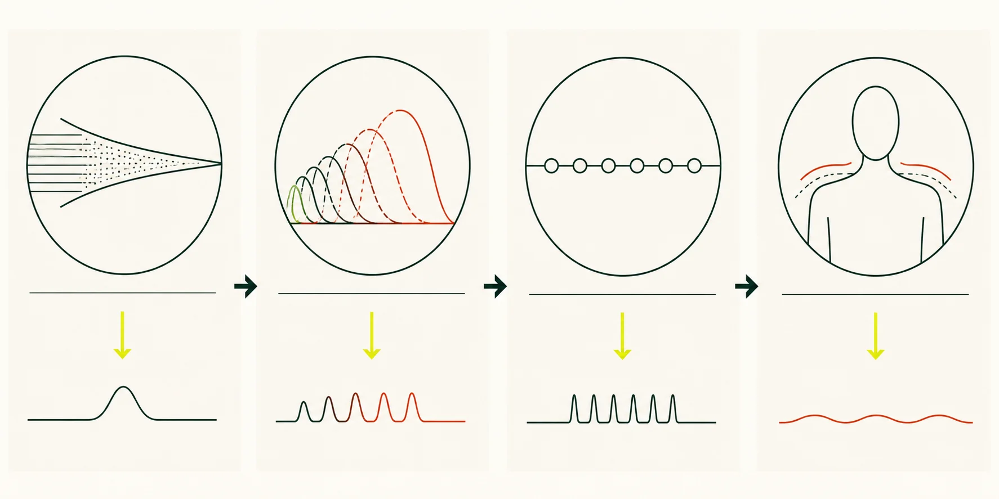

部分核實版權限制
研究領域
指法與演奏技法
從下列子題閱讀相關文章，或查找本領域已收錄的 20 筆來源。各子題的資料深度不同，頁內另列收錄狀況。
L3 · 教學可用21 個去重來源16 項核對紀錄
16 項已記錄核對的陳述 · 1371 字正文
本頁達到站內正文門檻，並附核對來源。層級反映資料覆蓋，不等於外部專家認證；引用前請核對原文。 來源數依站內規則去重，尚未逐一追查相互引用的依賴關係。
已核實專題
1 篇
相關來源
20 筆
部分核實版權限制
部分核實版權限制
學位論文 · 2014-06-23
The dizi (Chinese bamboo flute) its representative repertoires in the years from 1949 to 1985
Chang-ning Chai
歷史與文化地域與流派曲目、作曲及演奏實踐指法與演奏技法
已核實開放取用
部分核實版權限制
學位論文 · 2009
Woodwind doubling on folk, ethnic, and period instruments in film and theater music: case studies and a practical manual
Bret Pimentel
歷史與文化樂器分類曲目、作曲及演奏實踐指法與演奏技法
部分核實版權限制
Youtube Video · 2020-09-03
D key dizi flute- Double tonguing technique practice D调竹笛《练习曲 双吐》全按作5 边看谱边练习 @Dan Tang
DanTang&Chinese bamboo flute
教學與學習指法與演奏技法
部分核實只提供連結
機構網頁 · 日期未載
Wind Instruments — Chinese Orchestra
Timbre and Orchestration Resource / ACTOR
聲學與音律樂器分類樂器結構與製作曲目、作曲及演奏實踐指法與演奏技法
部分核實版權限制
部分核實版權限制
部分核實版權限制
未核實版權限制
部分核實只供原站閱覽
部分核實版權限制
未核實版權限制
未核實版權限制
未核實版權限制
機構網頁 · 日期未載
Dizi (Chinese transverse bamboo flute)
Vancouver Inter-Cultural Orchestra
聲學與音律樂器分類樂器結構與製作曲目、作曲及演奏實踐指法與演奏技法
部分核實版權限制
部分核實只供原站閱覽
部分核實版權限制
部分核實版權限制
本篇視覺示意（非教學圖）
